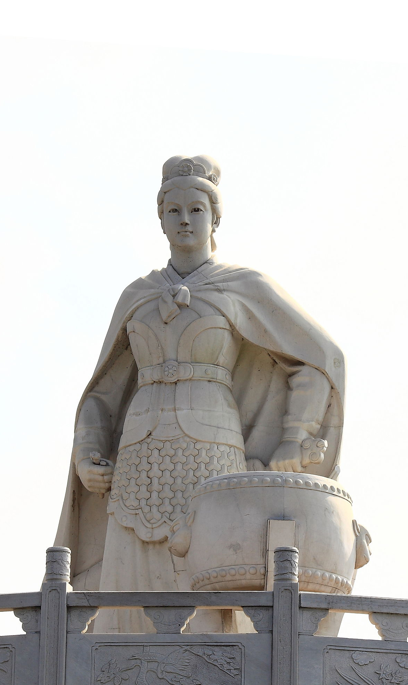
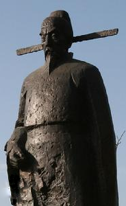
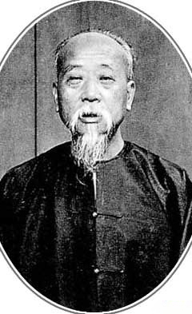
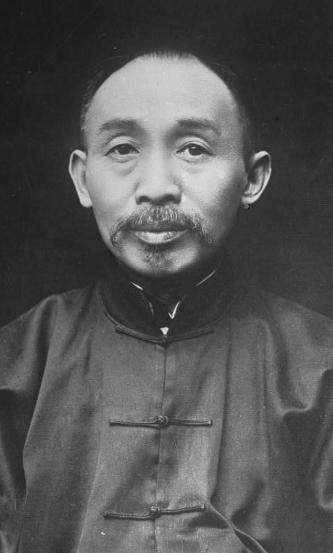
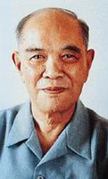

搜索
|  |  |  |  |  | |
|
杜荀鹤（约846—约906），字彦之，自号九华山人。汉族，池州石埭（今安徽省石台县）人。他出身寒微，中年始中进士，仍未授官，乃返乡闲居。曾以诗颂朱温，后朱温取唐建梁，任以翰林学士，知制诰，故入《旧五代史·梁书》（《旧五代史·卷二十三·梁书第二十三·列传第十三》有其传）。 他以“诗旨未能忘救物”（《自叙》）自期，故而对晚唐的混乱黑暗，以及人民由此而深受的苦痛，颇多反映，如山中寡妇的避征无门，《旅泊遇郡中叛乱示同志》中官兵的遍搜珠宝，乱杀平民，甚至拆古寺，掘荒坟；《再经胡城县》中酷吏的残忍，县民的含冤，都是这一时期社会生活的真实写照。其诗也明白平易，且都是近体诗，但也失之浅率，不甚耐读。他自称【苦吟】，从技巧上说，未必如此。《沧浪诗话》将他列为一体，翁方纲不以为然，在《石洲诗话》中说：【咸通十哲，概乏风骨……杜荀鹤至令严沧浪目为一体，亦殊浅易。】《苕溪渔隐丛话》引《幕府燕闲录》，也谓鄙俚浅俗，惟宫词为唐第一。 |
梁红玉（1102—1135年），原籍安徽池州，生于江苏淮安，宋朝著名抗金女英雄，祖父与父亲都是武将出身，梁红玉自幼随父兄练就了一身功夫。史书中不见其名，只称梁氏。“红玉”是其战死后各类野史和话本中所取的名字，首见于明朝张四维所写传奇《双烈记》：“奴家梁氏，小字红玉。父亡母在，占籍教坊，东京人也。”后结识韩世忠，两人初次见面，是在平定方腊起义后的庆功宴上，梁红玉感其恩义，以身相许，韩赎其为妾，原配白氏死后成为韩世忠的正妻。 建炎三年（1129年），在平定苗傅叛乱中立下殊勋，一夜奔驰数百里召韩世忠入卫平叛，因此被封为安国夫人和护国夫人。后多次随夫出征，在建炎四年（1130年）黄天荡之战中亲执桴鼓，和韩世忠共同指挥作战，将入侵的金军阻击在长江南岸达48天之久，从此名震天下。后独领一军与韩世忠转战各地，多次击败金军，绍兴五年（1135年）随夫出镇楚州，于当年八月二十六日死于楚州抗金前线，绍兴二十一年（1151年），韩世忠病逝，夫妇合葬于苏州灵岩山下。 |
黄观（1364~1402），字澜伯，又字尚宾，池州府贵池县清江金墩(今安徽省池州市平天湖风景区清溪街道上清溪联盟村，今为联盟社区)人。明洪武二十三年（1390），黄观以贡生入太学。同年八月，在南京应乡试，中解元，次年三月应会试，中会元。是年四月，黄观复参加由明太祖朱元璋亲发策问殿试。他在策论中极力主张“屯兵塞上，且耕且守，来则拒之，去则防之，则可中国无扰，边境无虞”。从而深得朱元璋的嘉许，取殿试一甲第一名（状元），授翰林院修撰。乃明朝历史上第一位“连中三元”者。 他自幼勤奋、治学严谨，注重时论，不尚浮文。从秀才到状元，在县、府、院三级经过六次考试（县考、府考、院考、乡试、会试、殿试），均获第一名，时人赞誉他“三元天下有，六首世间无”。在永乐帝朱棣篡权后，黄观尽忠投江而死，其名从登科录上划去。在万历年间才得以还清白，追加谥号文贞。 |
周馥（1837～1921.9.22），字玉山，号兰溪，谥悫慎。安徽至德（今安徽东至）人。早年因多次应试未中，遂投笔从戎，在淮军中做了一名文书。后又升任县丞、知县、直隶知州留江苏补用、知府留江苏补用。清同治九年（1870年），以道员身份留直隶补用，其间积极筹划建立北洋海军事宜，同时还创办了中国第一所武备学堂——天津武备学堂。光绪三年（1877年）任永定河道；七年（1881年）任津海关道；九年又兼任天津兵备道；十年，奉李鸿章之命到渤海编练民舶团练；十四年（1888年）升任直隶按察使。甲午战争爆发后，被任命为前敌营务处总理。 马关议和后，以身体病弱自请免职。周馥初为李鸿章文牍，协其兴办洋务三十余载，在北洋海军、武备学堂、天津电报局及开平煤矿创办过程中均有作为，是后期洋务运动实际上的操盘手，而且助开复旦公学（复旦大学前身）与安徽公学，有功于教育。 |
许世英（1873年—1964年10月13日），字静仁，号俊人，安徽省至德县（今东至县）人。19岁中秀才，光绪23年（1897）以拨贡生选送京师参加廷试，得一等，以七品京官分发刑部主事，从此跻身官场，历经晚清、北洋、民国三个时期，宦海浮游60余年，成为中国近代政坛上一位著名历史人物，曾任中华民国国务总理。 (以下省略部分担任官职) 1921年9月，出任安徽省省长。翌年因坚持裁撤安武军，被迫卸去省长职，任航空署督办。1924年11月被免职，段祺瑞任命他为筹委会秘书长。不久，被任命为内阁总理。 1925年任北京政府国务总理，旋兼财政总长。1926年辞职去上海，参与组织反对孙传芳的苏浙皖联合会，遭通缉逃往香港。1928年任赈务委员会委员长，任经济委员会常务委员兼主席。 1936年出任驻日本大使。翌年回国，重掌财务委员会。1945年授以国民政府高等顾问。1947年后历任国民政府委员、蒙藏事务委员长、总统府高级顾问等职。 1964年病逝于台北。终年91岁。 |
姚依林（1917年9月6日－1994年12月11日），安徽省池州市贵池区人，曾用姚克广一名， 是党和国家的优秀领导人、杰出的无产阶级革命家、我国经济工作的卓越领导人。 在60年的革命生涯中，表现了一个杰出的无产阶级革命家的高尚思想情操和博大胸怀，体现了一名共产党员的优秀品德。他对共产主义矢志不渝，对党对人民忠心耿耿、无限热爱，对革命和建设事业兢兢业业、鞠躬尽瘁。他始终刻苦学习马克思主义理论，一贯坚持党性原则，立场坚定，旗帜鲜明。他严格遵守党的纪律和政治生活准则，,始终保持人民公仆的本色。他赢得了广大干部和群众的尊敬和爱戴。 姚依林同志1994年12月11日因病在北京逝世。姚依林同志的逝世，是党和国家的重大损失。我们要化悲痛为力量，学习姚依林同志的革命精神和优秀品德，紧密地团结在以江泽民同志为核心的党中央周围，遵循党的基本路线，为建设有中国特色的社会主义而努力奋斗。 |